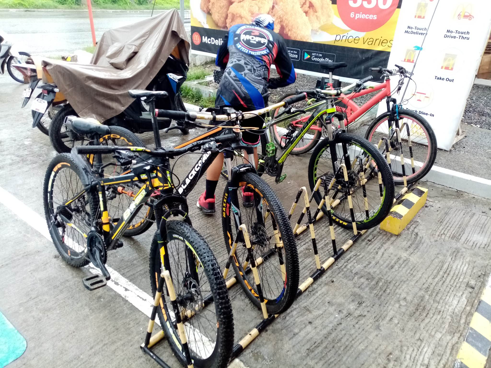
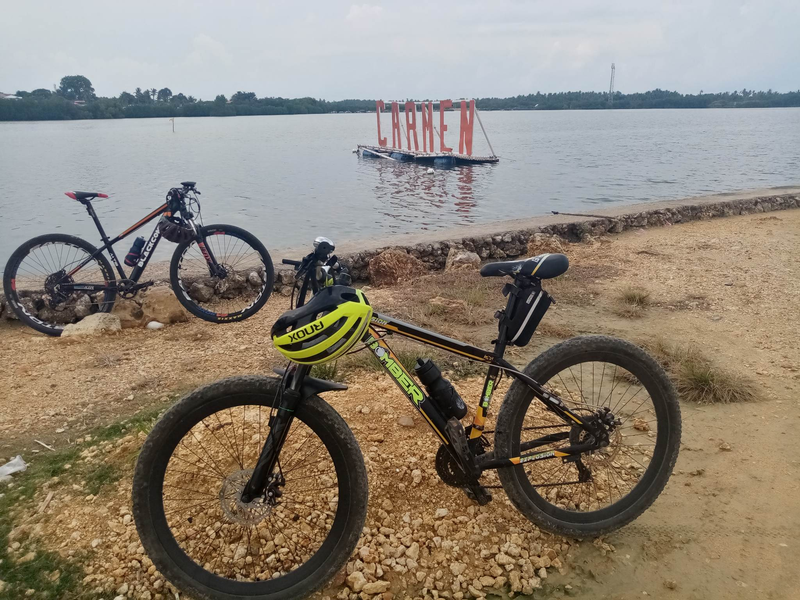
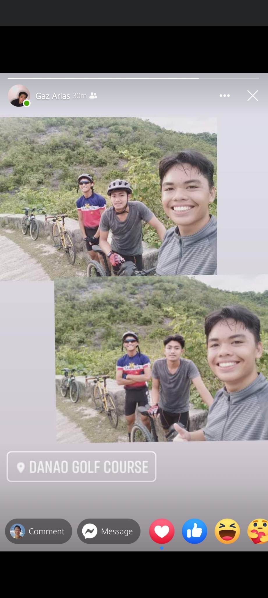
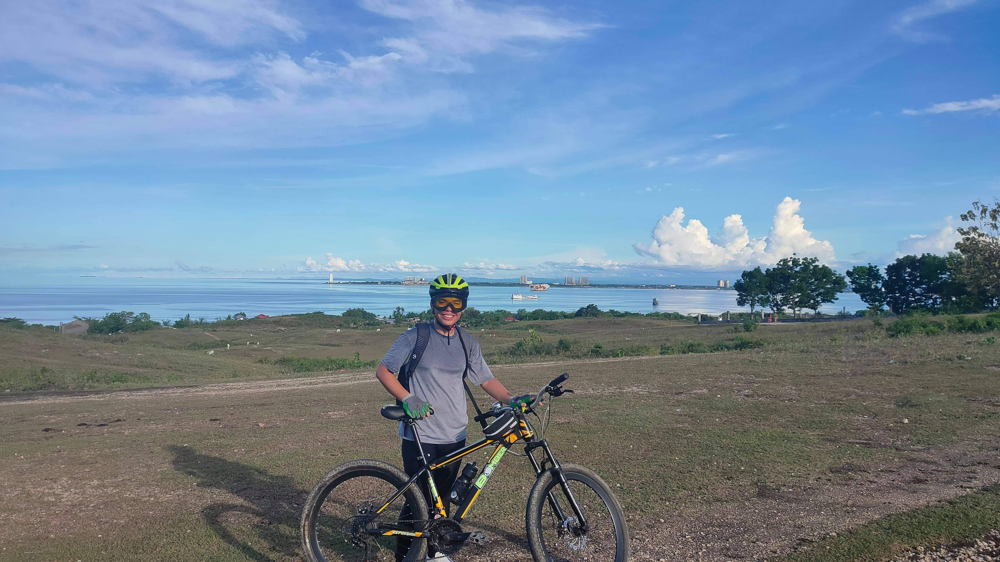
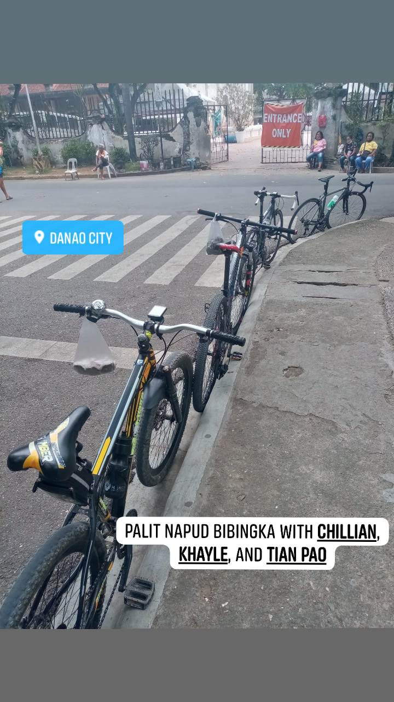
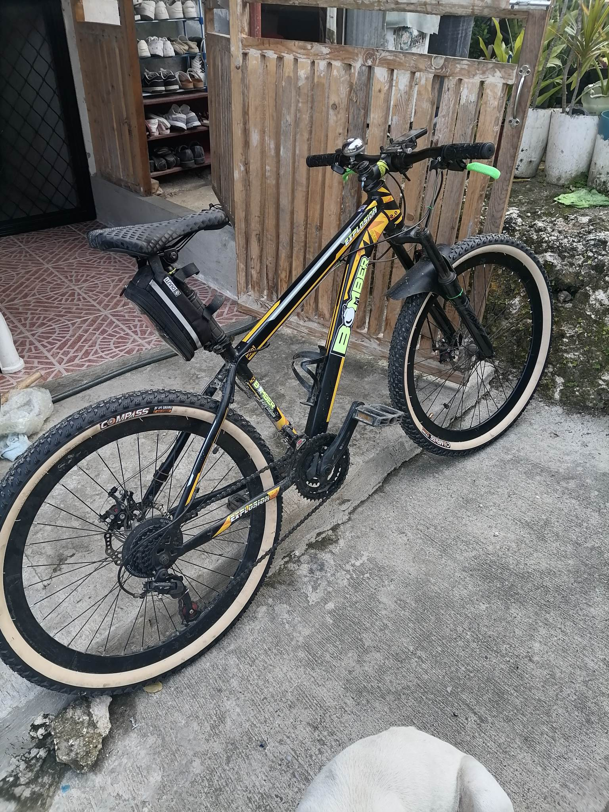

Hi, my name is Adrian Alejandrino. I will in this website, I will show you my Cycling Adventure/Journey.
My cycling adventure started when my Mom bought me a mountain bike. After owning a mountain bike, I immediately practised and learned how to ride a bike. The mountain bike was a birthday gift to me from my mother. Back when I was still younger, I never knew how to ride a bike. But now that I know how to ride one, this is where I started my cycling adventures.
Below, I'll be showing some of my Cycling Adventures as well as some Pictures and their stories. Sadly, some of my cycling adventures weren't added here because I don't have documentations of it. Yet, these adventures below are one of the best and memorable ones.
In this cycling adventure. It was my first time riding the bike with friends. We were venturing Danao Golf Course. The place had a very steep climb which made me dismount from my bike and pushed my bike until I reached the top. The place was very lively and there were alot of cyclists too.
It was really memorable, not just because it was my first time riding the bike with friends but also, It was my first time to get a "Pitik" or a stolen/not stolen shot from a random photographer.
This cycling adventure is one of the most chaotic and memorable adventure. We started our adventure from Cogon, Compostela, to our next stop Q-Park. But before we got to Q-Park my friend had a flat tire because of a scattered glass on the road. Plus, it was also a rainy day that time we had our adventure. Even though we had some trouble before getting to our first stop, we still made it to Q-Park.
After arriving Q-Park, we left off to go to McDonalds Danao. While on the way to McDonalds, we were like very wet chicks because of the rain. It was very cold, but we did make it to McDonalds and had our meal and warm up. It was a really fun adventure.
The reason behind this adventure was that my elementary classmate had joined a 500 km Challenge Competition. So that was why he had to ride everyday from Talisay to Catmon to be ahead from other competitors. That's when the idea hit where I would join him with his ride to Catmon.
It was a really fun adventure because I got to experience 3 consecutive days doing an exhausting cycling adventure, which enhanced my lung capacity and stamina in cycling. My friend also taught me some techniques about cycling which made my adventures easier.
|

McDonalds Danao
|

Oval/Park, Carmen
|

Danao Golf Course
|
|

Apollo's Heights
|

Sto. Thomas Church, Danao
|

Atubangan sa ako balay hehe
|